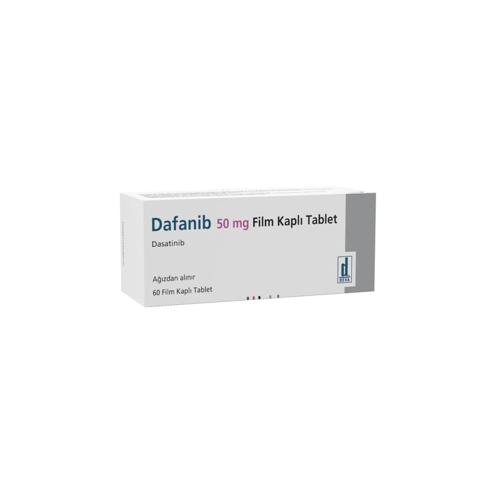

Dafanib 50 mg Film Kaplı Tablet , 60 Adet

Ne için kullanılır
KT · Bölüm 1DAFANİB, dasatinib adlı etkin maddeyi içeren ve ağız yoluyla kullanılan bir ilaçtır.
DAFANİB, beyaz - beyazımsı, bikonveks, oblong film kaplı tablettir. Her kutuda 60 adet film kaplı tablet bulunmaktadır.
DAFANİB, kronik miyeloid lösemisi olan (KML) yetişkinler, adölesanlar ve en az 1 yaşındaki çocuklar için bir tedavidir. Lösemi, akyuvar hücrelerinin bir kanser şeklidir. Bu akyuvar hücreleri genelde vücudun enfeksiyonlara karşı savaşmasına yardımcı olur. KML’li kişilerde
granülosit adı verilen akyuvar hücreleri kontrol dışı büyümeye başlarlar. DAFANİB bu lösemili hücrelerin büyümesini engeller.
DAFANİB aynı zamanda, Philadelphia kromozom pozitif (Ph+) akut lenfoblastik lösemili (ALL) ve lenfoid blast KML’ li ama daha önceki tedavilerden fayda görmeyen yetişkinler, adölesanlar ve en az 1 yaşındaki çocuklar için de bir tedavidir. ALL’a sahip kişilerde, lenfosit adı verilen akyuvar hücreleri çok çabuk çoğalırlar ve çok uzun yaşarlar. DAFANİB, bu lösemili hücrelerin büyümesini engeller.